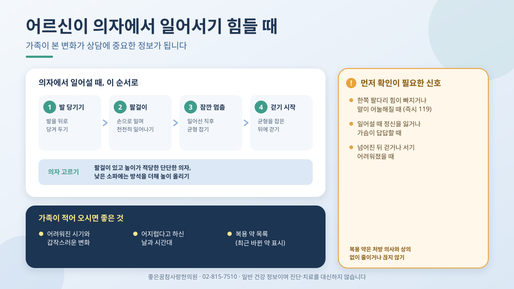
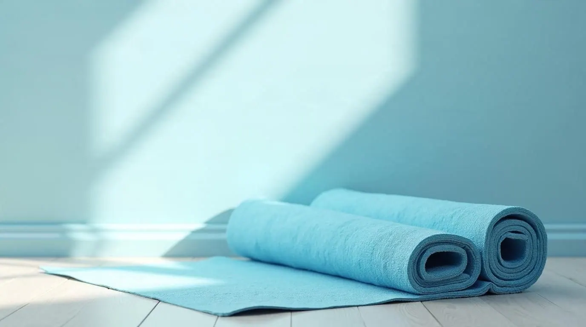

어르신이 의자에서 일어서기 어려워지는 것은 다리 힘과 관절, 어지럼과 복용 약 등 여러 요인이 겹칠 수 있어, 가족이 언제부터 어떤 순간에 어려워하는지 관찰해 전해 주시면 상담이 정확해집니다.
여쭙는 것
- 일어서기 어려워진 지 얼마나 되었나요? 서서히인가요, 갑자기인가요?
- 일어서는 순간 어지럽거나 눈앞이 어두워지는 일이 있나요?
- 무릎이나 엉덩이, 허리 중 어디가 아프다고 하시나요?
생활에서 해 볼 것
- 팔걸이가 있고 높이가 적당한 단단한 의자 쓰기
- 일어서기 전에 발을 뒤로 당기고 손으로 팔걸이를 밀며 천천히 일어나기
- 일어선 직후 잠깐 멈춰 균형을 잡은 뒤 걷기 시작하기
한의원에서 함께 살필 것
- 일어설 때 무릎과 엉덩이가 아파 망설이게 되는 경우 아픈 동작과 생활 습관을 함께…
- 일어선 뒤 어지럽거나 휘청거리는 경우 식사와 수분, 복용 약과 생활 리듬을 함께 살…
- 전반적으로 기운이 떨어져 활동이 줄어든 경우 잠과 식사, 활동량을 함께 살핍니다.
먼저 확인이 필요한 신호
- 갑자기 한쪽 팔다리에 힘이 빠지거나 말이 어눌해진 경우(즉시 응급실)
- 일어설 때 정신을 잃거나 가슴이 답답한 경우
- 넘어진 뒤 걷거나 서기 어려워진 경우

"요즘 일어나실 때 시간이 걸리세요"라는 가족의 말씀은 중요한 정보입니다. 어르신 본인은 익숙해져 잘 말하지 않는 경우가 많아, 가족이 본 변화를 함께 들으면 어디서부터 살필지 정하기가 쉬워집니다.
왜 이런 불편이 생길 수 있나요
- 허벅지와 엉덩이 근육이 약해지면 앉은 자리에서 몸을 밀어 올리는 힘이 부족해집니다.
- 무릎이나 엉덩이 관절이 아프면 일어서는 순간을 망설이게 됩니다.
- 일어설 때 혈압이 잠깐 떨어지면 어지러워 다시 앉게 되기도 합니다.
- 낮은 소파나 푹 꺼지는 의자는 같은 힘으로도 일어서기 더 어렵게 만듭니다.

가족이 집에서 볼 수 있는 것
- 일어설 때 팔걸이나 무릎을 손으로 짚어야만 일어나시는지
- 한 번에 일어나지 못하고 몸을 몇 번 앞뒤로 흔든 뒤 일어나시는지
- 일어선 뒤 바로 걷지 못하고 잠시 멈춰 서 계시는지
- 걸음이 예전보다 좁아지고 발을 끄시는지
- 앉을 때 털썩 주저앉듯 앉으시는지
이런 모습이 언제부터, 하루 중 언제 더 두드러지는지 적어 두시면 진료 때 도움이 됩니다.
자주 하는 오해
- 연세가 드셨으니 일어서기 힘든 것은 어쩔 수 없다고 여기기 쉽지만, 의자 높이와 일어서는 요령, 다리 힘을 점검하면 생활에서 도울 수 있는 부분이 있습니다.
- 넘어질까 봐 최대한 앉아 계시게 하는 것이 안전하다고 생각하기 쉽지만, 오래 앉아만 계시면 다리 힘이 더 줄어 일어서기가 더 어려워질 수 있습니다.
- 가족이 팔을 잡아당겨 일으켜 드리면 된다고 여기기 쉽지만, 팔을 세게 당기면 어깨에 무리가 갈 수 있어 허리 쪽을 받쳐 드리는 편이 안전합니다.
- 어르신이 괜찮다고 하시면 문제가 없다고 생각하기 쉽지만, 불편을 잘 말씀하지 않으시는 경우가 많아 가족이 본 모습이 중요한 단서가 됩니다.

예를 들면 이런 경우입니다
- 예를 들어 감기를 앓고 일주일쯤 누워 지내신 뒤부터 일어서기를 힘들어하시는 경우라면, 식사와 수분이 회복되었는지 먼저 살피고 다리 힘을 천천히 되찾는 방법을 함께 정합니다.
- 예를 들어 새로 혈압약을 드시기 시작한 뒤 일어설 때 어지럽다고 하시는 경우라면, 약을 임의로 줄이지 말고 처방한 병원에 먼저 알리시도록 안내드립니다.
- 예를 들어 낮은 거실 소파에서만 유독 일어나기 어려워하시는 경우라면, 앉는 자리의 높이와 팔걸이부터 바꿔 보고 그래도 어려운지 살핍니다.
- 예를 들어 화장실 변기에서 일어나기를 특히 힘들어하시는 경우라면, 손잡이를 짚을 수 있는 자리와 변기 높이를 함께 살펴보고 집에서 바꿀 수 있는 것부터 정합니다.
먼저 이렇게 여쭙니다
- 일어서기 어려워진 지 얼마나 되었나요? 서서히인가요, 갑자기인가요?
- 일어서는 순간 어지럽거나 눈앞이 어두워지는 일이 있나요?
- 무릎이나 엉덩이, 허리 중 어디가 아프다고 하시나요?
- 최근에 복용하는 약이 바뀌었나요?
- 식사량이나 활동량이 줄지는 않았나요?
- 집에서 주로 앉으시는 의자나 소파는 어떤 높이인가요?

일상에서 먼저 해 볼 수 있는 것
- 팔걸이가 있고 높이가 적당한 단단한 의자 쓰기
- 일어서기 전에 발을 뒤로 당기고 손으로 팔걸이를 밀며 천천히 일어나기
- 일어선 직후 잠깐 멈춰 균형을 잡은 뒤 걷기 시작하기
- 하루 몇 번 의자에서 일어났다 앉기를 가볍게 반복하며 다리 힘 유지하기
- 낮은 소파에는 방석을 더해 앉는 높이 올리기
- 어르신이 자주 다니는 길에 걸려 넘어질 만한 물건과 전선 치워 두기
가족이 함께 점검해 보세요
- 일어설 때 손으로 짚지 않으면 일어나기 어려우시다
- 일어서는 데 예전보다 시간이 눈에 띄게 걸린다
- 일어선 직후 어지럽다고 하시거나 휘청거리신다
- 최근 몇 달 사이 넘어지셨거나 넘어질 뻔하셨다
- 식사량이 줄고 체중이 빠지셨다
- 최근 새로 드시기 시작한 약이 있다
- 외출이나 산책을 예전보다 꺼리신다
해당하는 항목이 있다면 진료 때 가족이 본 모습을 함께 말씀해 주세요.

한의원에서 함께 살필 수 있는 경우
- 일어설 때 무릎과 엉덩이가 아파 망설이게 되는 경우 아픈 동작과 생활 습관을 함께 살핍니다.
- 일어선 뒤 어지럽거나 휘청거리는 경우 식사와 수분, 복용 약과 생활 리듬을 함께 살핍니다.
- 전반적으로 기운이 떨어져 활동이 줄어든 경우 잠과 식사, 활동량을 함께 살핍니다.
좋은꿈참사랑한의원에서는 의자에서 일어서는 동작과 걷기 시작하는 모습을 직접 확인하고, 무릎과 엉덩이, 허리의 통증과 어지럼 여부를 함께 여쭙니다. 필요하다고 판단될 때 침이나 추나 등을 어르신 체력에 맞춰 정하고, 가족에게는 집에서 도울 방법을 알려 드립니다.
첫 방문에는 보호자가 함께 문진표를 쓰고, 원장이 어르신께 불편한 곳과 시기를 먼저 여쭌 뒤 가족이 본 변화를 이어서 듣습니다. 모든 분께 진맥을 짚고, 복용 약 목록을 함께 확인한 뒤 무릎과 엉덩이, 허리의 움직임을 무리 없는 범위에서 봅니다. 오늘 할 치료와 이유를 먼저 설명드린 뒤 어르신 체력에 맞춰 진행하고, 귀가 전에는 다음 진료 때 살펴볼 점을 함께 정합니다.
이렇게 기록해 오시면 상담이 쉬워집니다
- 일어서기 어려워진 시기와 갑작스러운 변화가 있었는지
- 일어설 때 어지럽다고 하신 날과 시간대
- 복용 중인 약 목록(최근 바뀐 약 표시)
- 집에서 주로 앉으시는 의자나 소파의 높이와 팔걸이 여부
- 최근 몇 달 사이 넘어지셨거나 넘어질 뻔한 장소와 상황

며칠 지켜보고, 언제 바로 확인하나요
- 조금씩 느려지는 변화라면 2~4주 동안 일어서는 모습과 넘어질 뻔한 일을 적어 보며 지켜보고, 의자 높이와 팔걸이 같은 환경부터 바꿔 보세요.
- 몇 주 사이에 눈에 띄게 어려워졌거나 넘어질 뻔한 일이 반복된다면 진료를 받아 보세요.
- 며칠 사이에 갑자기 일어서지 못하시거나, 한쪽 팔다리에 힘이 빠지고 말이 어눌해지면 기다리지 말고 바로 응급실로 가세요.
이런 증상은 먼저 확인이 필요합니다
- 갑자기 한쪽 팔다리에 힘이 빠지거나 말이 어눌해진 경우(즉시 응급실)
- 일어설 때 정신을 잃거나 가슴이 답답한 경우
- 넘어진 뒤 걷거나 서기 어려워진 경우
복용 중인 약은 처방한 의사와 상의 없이 줄이거나 끊지 않습니다.

함께 읽으면 좋은 글
- 70대에 몸의 균형이 흔들리는 느낌이 들 때 생활에서는 무엇을 살피나요?
- 60대가 밤에 화장실에 가다가 어지러울 때 낙상은 어떻게 예방하나요?
- 어르신에게 추나요법은 어떤 점을 조심하며 진행하나요?
한눈에 보는 표
| 구분 | 핵심 |
|---|---|
| 여쭙는 것 | 일어서기 어려워진 지 얼마나 되었나요? 서서히인가요, 갑자기인가요? 일어서는 순간 어지럽거나 눈앞이 어두워지는 일이 있나요? |
| 생활에서 해 볼 것 | 팔걸이가 있고 높이가 적당한 단단한 의자 쓰기 일어서기 전에 발을 뒤로 당기고 손으로 팔걸이를 밀며 천천히 일어나기 |
| 한의원에서 함께 살필 것 | 일어설 때 무릎과 엉덩이가 아파 망설이게 되는 경우 아픈 동작과 생활 습관을 함께 살핍니다. 일어선 뒤 어지럽거나 휘청거리는 경우 식사와 수분, 복용 약과 생활 리듬을 함께 살핍니다. |
| 먼저 확인이 필요한 신호 | 갑자기 한쪽 팔다리에 힘이 빠지거나 말이 어눌해진 경우(즉시 응급실) 일어설 때 정신을 잃거나 가슴이 답답한 경우 |
자주 묻는 질문
연세가 들면 일어서기가 어려운 것은 당연한 일인가요?
조금 느려지는 것은 흔하지만 갑작스러운 변화는 이유를 확인해 보는 것이 좋습니다.
가족이 대신 일으켜 드려도 되나요?
필요한 상황에서는 돕되, 가능한 동작은 스스로 하시도록 곁에서 안전하게 지켜보는 것이 좋습니다.
진료 때 가족이 함께 가야 하나요?
변화를 가장 잘 아는 분이 함께 오시면 이야기가 정확해집니다. 방문 전에 전화로 상황을 알려 주세요.
의자 높이는 어느 정도가 좋나요?
앉았을 때 발바닥이 바닥에 닿고 무릎이 엉덩이와 비슷하거나 조금 낮은 높이가 일어서기 편한 경우가 많습니다. 어르신 체형에 맞춰 조정해 보세요.
집에서 할 수 있는 다리 힘 운동이 있나요?
팔걸이가 있는 의자에서 천천히 일어났다 앉기를 몇 번씩 해 보는 것이 흔히 쓰는 방법입니다. 어지럽거나 아프시면 바로 멈추고, 처음에는 가족이 곁에서 지켜봐 주세요.
지팡이나 보행기를 쓰는 것이 좋을까요?
어르신 상태에 따라 다르므로 진료 때 걷는 모습을 보고 함께 이야기합니다. 보조 기구가 필요해 보이면 재활의학과 같은 다른 의료기관 상담도 함께 권해 드립니다.
이 글은 일반적인 건강 정보이며 개인의 진단이나 치료를 대신하지 않습니다. 증상이 있거나 복용 중인 약이 있다면 진료를 통해 확인하세요. 치료 효과는 개인마다 다를 수 있습니다.
작성 기준: 일반적으로 알려져 있는 건강 정보를 참고해 정리했습니다(대표원장 감수). 증상 기록은 1~2주 동안 하루 1회, 비슷한 시간에 적어 오시면 지난 상태와 비교하기 쉽습니다.
좋은꿈참사랑한의원은 재진 때 지난번 이야기부터 이어서 여쭙니다. 진료시간과 예약은 오시는 길에서 확인하세요.
어디서 상담받을 수 있나요?
좋은꿈참사랑한의원은 서울 동작구 만양로2길 2 신성빌딩 3층·5층(서울 동작구 상도동, 7호선 상도역 3번 출구 근처)에 있습니다. 한의사 3명(이종호 대표원장, 조영기 수석진료원장, 정원영 진료원장)이 진료합니다. 진료시간은 평일 09:30~20:00(점심 13:00~14:00), 토·일·공휴일 09:30~15:00이며, 방문 전 전화로 확인을 권합니다. 예약은 네이버 예약, 카카오톡 상담, 전화 02-815-7510로 받습니다.